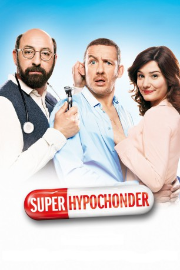
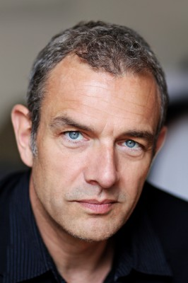

#3138 Super-Hypochonder
 
 IMDB-Wertung: 6.0 / 10
IMDB-Wertung: 6.0 / 10  Metascore: 0
Metascore: 0 
Romain Faubert ist ein neurotischer Profi-Hypochonder und wittert allerorten sogar solche Keime und Erreger, die Ärzte noch nicht einmal bestimmt haben. Der einzige, der sich seiner annimmt, ist Dr. Dimitri Zvenska, bei dem Romain Stammpatient ist. Doch auch die Geduld dieses Mediziners neigt sich langsam dem Ende zu. Der geplagte Arzt heckt einen Plan aus, den Wartezimmer-Rekordhalter mit einer netten Dame zu verkuppeln. Er schleppt Romain mit zu Partys und meldet ihn bei Singlebörsen an, aber die Suche nach der richtigen Partnerin für den eingebildeten Kranken bleibt ohne Erfolg. Eine radikale Idee muss her! Also soll Romain Dimitri auf eine humanitäre Hilfsmission begleiten. Dort wird der Dauer-Single allerdings mit einer Revolutionsikone des krisengeplagten Landes verwechselt und wider Willen zum gefeierten Helden. Noch schlimmer kommt es jedoch, als Romain sich in Anna verliebt, Dimitris Schwester.
Jahr: 2014
Dauer: 107 Minuten
FSK: 6
Land: Frankreich Studio: Prokino FilmverleihTonspuren:
Untertitel:
Auflösung: 1080p (1920x800) Größe: 5416 MB
Genre: Komödie
Regisseur: Dany Boon
Drehbuch: Dany Boon, Dany Boon
Soundtrack: Klaus Badelt
Darsteller:
 Dany Boon als Romain Faubert
Dany Boon als Romain Faubert Kad Merad als Dr. Dimitri Zvenka
Kad Merad als Dr. Dimitri Zvenka Alice Pol als Anna Zvenka
Alice Pol als Anna Zvenka-  Jean-Yves Berteloot als Anton Miroslav
 Judith El Zein als Norah Zvenka
Judith El Zein als Norah Zvenka Stéphane De Groodt als L'avocat de Romain
Stéphane De Groodt als L'avocat de Romain- Tatiana Gousseff als L'employée du cinéma
- Jeff El Eini als L'interne débrief
- Nicolas Guy als Un pompier
- Elyse Scherz als La touriste métro
- Fabrice Boutique als Le CRS Calais
- Georges Terryn als Extra , uncredited
- Valérie Bonneton als Isabelle
- Marthe Villalonga als La mère de Dimitri
- Bruno Lochet als Le flic de l'immigration
- Jérôme Commandeur als Guillaume Lempreur
- Jonathan Cohen als Marc Harris
- Warren Zavatta als Le lieutenant de police
- Etienne Chicot als La professeur urgences
- Guy Lecluyse als Le patient 'chat dans la gorge'
- Gudule Zuyten als Une voisine
- Virginia Anderson als Une voisine
- Christelle Delbrouck als Une voisine
- Laëtitia Lacroix als Constance
- Marion Barby als Nina Zvenka
- Vanessa Guide als Manon
- Sami Ameziane als Membre du GIPN
- Alexandre Carrière als Membre du GIPN
- Camille Chamoux als La secrétaire de Dimitri
- Dan Cohen als Serveur restaurant
- Charline Paul als Romane, la femme Nouvel An
- Judith Siboni als Daphné
 Vincent Haquin als Le sportif du café
Vincent Haquin als Le sportif du café- Paul Borne als Le flic centre de rétention
- Laurent Saint-Gérard als Le pharmacien de garde
- Bozidar Smiljanic als Le patron du kebab
- Stephan Avoge als Jacques, l'invité 'nez en sang'
- Yaël Boon als La femme de Jacques
- Laurie Degand als L'invitée fourrure
- Philippe Rasse als L'urgentiste
- Grégoire Taulère als Un pompier
- Flora Thomas als Infirmière débrief
- Thomas Stuyck als Un pompier
- Alexis Brami als Le serveur café Neuilly
- Dean Nichols als Le touriste métro
- Ornella Fleury als Emilie Guéret
- Patrick Brossard als Le patient centre médical 'boutons'
- Jean-Yves Girin als L'agent sécurité centre médical
- Priscilla Adade als Le médecin centre Calais
- Andreas Perschewski als Homme couple Tcherkistan
Datei: X:\2014(N-Z)\Super-Hypochonder (2014, FSK6, 1920x800).mkv seit 03.02.2016
Festplatte: HD 2013(I-Z)-2014(A-Z)
 Es gibt insgesamt 163 Filme in der Gruppe '2014(N-Z)'
Es gibt insgesamt 163 Filme in der Gruppe '2014(N-Z)'